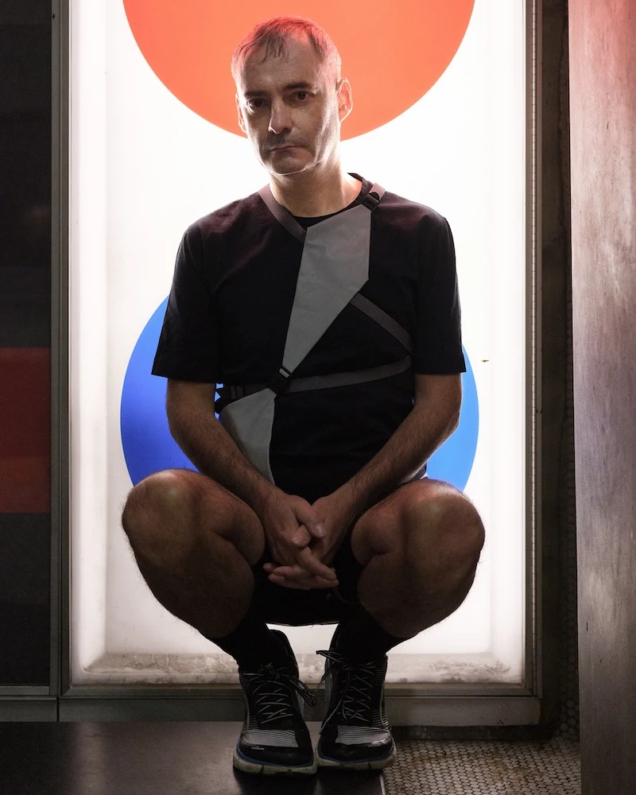

Gabriel Vigliensoni
Music artist & researcher · Montréal
Electronic music artist, performer and music technology researcher. His practice explores experimental workflows and machine learning for music-making.
Profile2nd EAIM workshop · AAAI-27
Human agency and creativity
in collaborative AI systems
Montréal, Canada February 2027
01 / The workshop
How can we design AI music systems that strengthen human creative agency through meaningful control, interaction and collaboration?
The 2nd Workshop on Emerging AI Technologies for Music brings together researchers and practitioners to explore how AI can support and extend human creativity. Our focus spans the ways musicians, producers, composers and educators direct and shape AI systems throughout musical practice.
We welcome work on interactive generation, personalisation, multimodal interfaces, creative workflows, evaluation and computational creativity. We also invite discussion of authorship, attribution, consent, accessibility and the representation of diverse musical traditions.
EAIM 2027 builds on the inaugural workshop at AAAI-26 in Singapore. This edition keeps human intention, critical judgement and artistic responsibility central to the conversation.
02 / Contribute
Research, creative systems
and critical perspectives.
We invite original contributions on emerging AI technologies for music, with a particular interest in human agency and collaborative creativity.
Submissions may include theoretical work, empirical studies, system designs, evaluations or artistic explorations. Strong conceptual and analytical contributions are also welcome.
We encourage demonstrations of AI-enabled musical instruments, interactive interfaces, performance systems and tools for composition or sound design.
We particularly welcome work on controllability, interpretability, explainability, personalisation and human–AI interaction.
Topics include, but are not limited to:
03 / Key milestones
The EAIM submission and review timeline.
The workshop will take place during the AAAI-27 workshop programme in Montréal. The assigned day, room and detailed programme will be announced later.
04 / Perspectives
Voices from creative AI research,
musical practice and creator rights.

Music artist & researcher · Montréal
Electronic music artist, performer and music technology researcher. His practice explores experimental workflows and machine learning for music-making.
ProfileUniversité de Montréal
Associate Professor and co-director of Laboratoire Formes·Ondes. He investigates human–computer interaction, digital music practices and musical creation.
ProfileSOCAN
Legal counsel with over a decade of experience in intellectual property and creator rights. Her work covers government relations, music licensing and copyright enforcement.
ProfileTalk titles and abstracts will be announced with the programme. Photo credits and sources are listed in the website credits.
05 / The people behind EAIM
Queen Mary University of London
& Singapore University of Technology and Design
PhD researcher at the Centre for Digital Music. His research explores neuro-symbolic music composition, musical structure and controllability. Lead organiser of EAIM 2026 and main contact for EAIM 2027.
PhD researcher at the Centre for Digital Music and Associate Lecturer at the Creative Computing Institute, University of the Arts London. His work has been exhibited at Sónar+D and IRCAM Forum.
PhD researcher in the Artificial Intelligence and Music programme. His research explores new interaction methods for audio synthesis in collaboration with Ableton.
Professor of Computational Creativity, AI and Games. His research investigates systems that take on creative responsibilities in generative music, art and science.
Associate Professor and head of the Audio, Music, and AI (AMAAI) Lab. Previously a Marie Skłodowska-Curie Postdoctoral Fellow at the Centre for Digital Music, Queen Mary University of London.
The following members served on the EAIM 2026 programme committee:
The EAIM 2027 programme committee members will be announced later.
Previously at EAIM
The inaugural workshop took place at AAAI-26 in Singapore on 26 January 2026. Read the research in PMLR Volume 303, with work on music generation, controllability, interaction and human–AI creativity.
06 / Before you get in touch
Registration, submissions
and attending the workshop.
Registration is managed directly by AAAI. Please use the official AAAI-27 registration page for registration options, fees and deadlines.
The EAIM organisers do not control registration, prices, payments or refunds, and cannot make exceptions to AAAI’s registration policies. Please direct these questions to AAAI registration at aaaireg@aaai.org.
AAAI offers workshop-only registration as well as workshop add-ons for technical programme registrants. Workshop-only registration does not include access to the main technical programme. Please check AAAI’s current options and fees directly.
Yes. You can attend EAIM without submitting a paper. Please register through AAAI, which manages workshop registration.
EAIM will take place in Montréal, Canada, during the AAAI-27 workshop programme on 22–23 February 2027. The exact EAIM day, room and timetable have not yet been announced. Please check this page for updates before making workshop-specific plans.
No. AAAI-27’s workshop policy requires in-person participation and does not permit virtual presentations. At least one author of each accepted paper must register and present the work in person.
Submit through the EAIM 2027 OpenReview portal. Prepare an anonymous paper of 8–11 pages, excluding references, in PMLR format. Use the EAIM Overleaf template or download the template (ZIP). The PMLR volume number in the template will be provided upon acceptance. Please read the submission instructions and important dates before submitting.
No. We welcome strong theoretical, conceptual and analytical contributions, alongside empirical studies, system designs and artistic explorations. Submissions should make a clear contribution relevant to the workshop themes.
We plan to submit accepted papers to PMLR, subject to confirmation of the publication arrangements. The previous edition’s proceedings are already available in PMLR Volume 303.
Use AAAI’s official visa invitation guidance and accommodation and travel information. Please contact AAAI for conference registration and invitation-letter queries.
Still have a workshop question?
Please read the FAQ above first. For questions about the CFP,
scope or programme, contact Keshav Bhandari.
For registration queries, please contact AAAI.